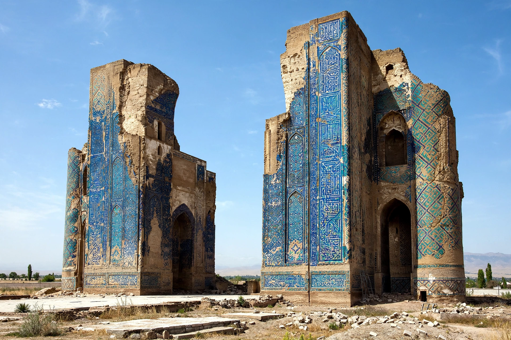

| Shahrisabz | |
|---|---|
 Remains of Timur's Ak-Saray Palace | |
| Country | Uzbekistan |
| Region | Qashqadaryo Region |
| Former name | Kesh |
| Known for | Birthplace of Timur (Tamerlane) |
| UNESCO | World Heritage Site (2000), Historic Centre of Shakhrisyabz |
Shahrisabz (Uzbek: Шаҳрисабз Shahrisabz; Persian: شهر سبز, "city of green / verdant city"), in earlier times known as Kesh, is a city in the Qashqadaryo Region of southern Uzbekistan, located about 80 km south of Samarkand at the foot of the Pamir-Alay mountains. One of the oldest cities of Central Asia, it is celebrated as the birthplace of the conqueror Timur (Amir Temur) in 1336.
Known in antiquity as Kesh, the city was a centre of Sogdiana and was visited by Alexander the Great's forces in the region. For centuries it remained a modest oasis town, overshadowed by Samarkand and Bukhara, until Timur—born in the nearby village of Khodja-Ilgar—made his ancestral city a showcase of his empire. He fortified it, endowed it with mosques and mausolea, and raised the enormous Ak-Saray ("White Palace"), whose surviving entrance portal, about 40 metres high, is covered in blue and turquoise tilework. The Castilian ambassador Ruy González de Clavijo described the palace in 1404.
Timur intended Shahrisabz as his burial place and built the Dorut Tilovat complex and a crypt for himself there, though he was ultimately buried in Samarkand. Later the city belonged to the Khanate and then Emirate of Bukhara, and formed part of the Uzbek Soviet Socialist Republic from 1924.
The historic centre preserves the Ak-Saray Palace ruins, the Dorut Tilovat memorial complex with the Kok Gumbaz mosque (1435), the Dorus Saodat mausoleum housing Timur's eldest son Jahangir, and the Hazrati Imam complex. UNESCO inscribed the Historic Centre of Shakhrisyabz on the World Heritage List in 2000; in 2016 it was placed on the List of World Heritage in Danger owing to large-scale redevelopment within the historic zone.